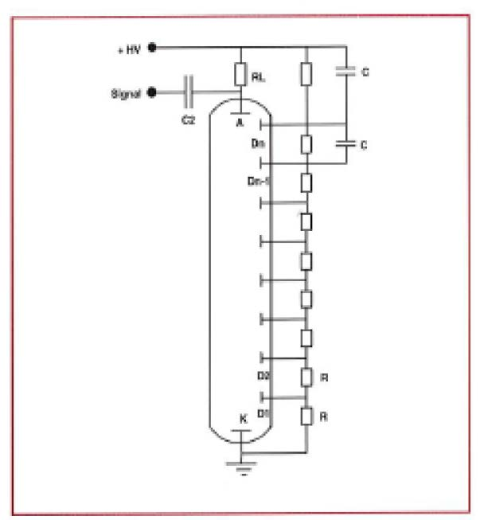
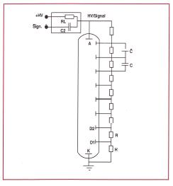
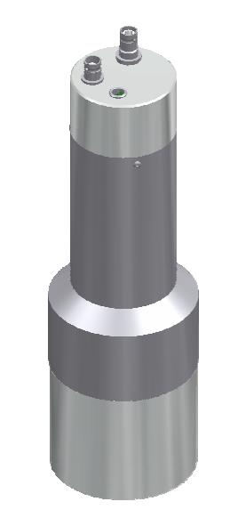
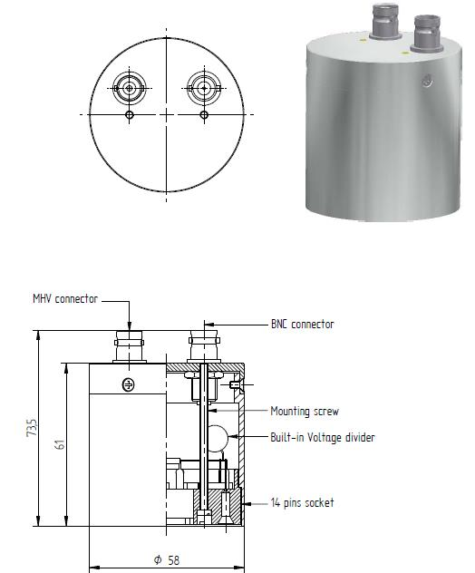
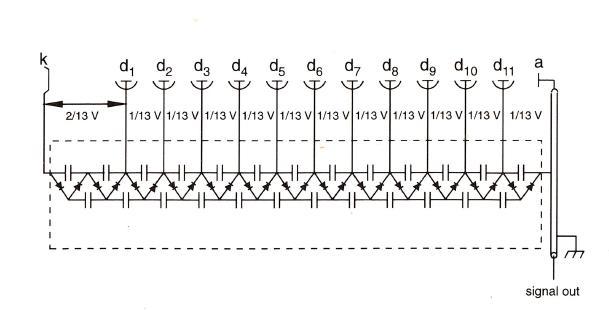
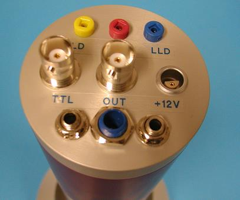
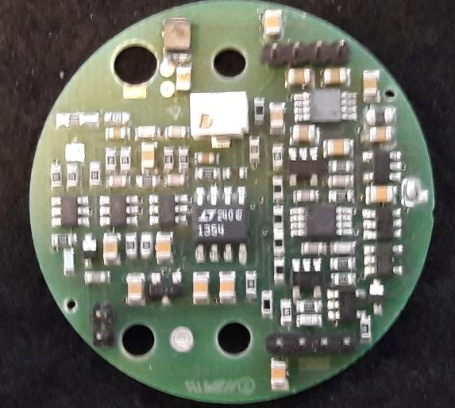
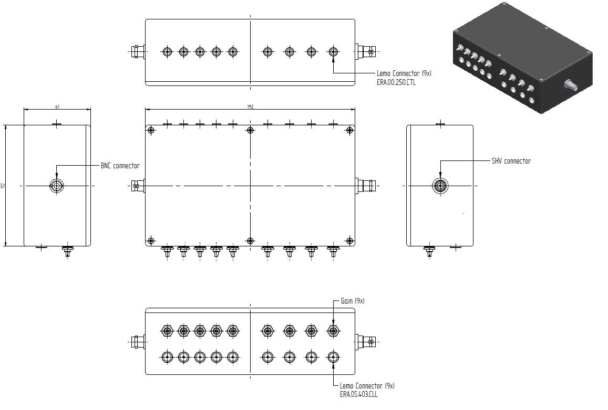
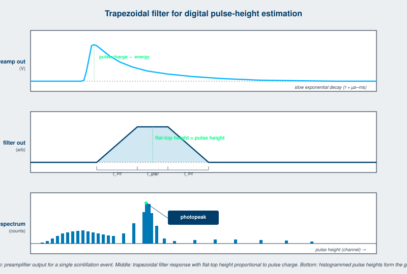

The scintillator and photodetector convert ionizing radiation into electrical pulses. The electronics chain is everything between the photodetector output and the recorded data. This chapter covers the topics the engineer specifying or building a detector instrument needs to know about: voltage divider design, preamplifiers, high-voltage supplies, signal connectors, digital pulse processing, and the modern network-attached architecture that has displaced the analog spectrum analyzer in most new designs.
A photomultiplier tube can be biased two ways. Either the photocathode is at ground and the anode is at high positive voltage, or the anode is at ground and the photocathode is at high negative voltage.
Positive HV at the anode is the older configuration. The photocathode and the entrance window are at ground potential, which simplifies the optical-coupling connection to the scintillator. The signal output sits at high positive voltage and must be capacitively coupled out, which limits the lowest signal frequencies and complicates current-mode operation. Positive HV is the historical default and remains common for laboratory instruments.
Negative HV at the photocathode is now the dominant configuration in commercial detectors. The signal output is at ground, simplifying connection to downstream electronics and enabling DC-coupled current-mode operation. The trade-off is that the photocathode and any optically coupled scintillator are at high negative voltage, requiring careful insulation between the crystal and any external metalwork.
For SiPM-coupled detectors the question does not apply. SiPMs operate at 25 to 50 V bias, with the cathode at ground and the anode at positive bias (or vice versa depending on the device polarity). The signal is coupled out through a transimpedance amplifier or a direct CMOS readout.


A PMT requires a different voltage at each dynode in the multiplication chain. The voltage divider network distributes the high-voltage supply across the dynodes through a resistor chain. The design of the divider is one of the more subtle topics in detector engineering and substantially affects the PMT's pulse linearity, count-rate capability, and gain stability.
The simplest divider is a resistor chain with each dynode tap fed from a node in the chain. Capacitors are added at the last few stages (where the per-pulse current draw is largest) to maintain the dynode voltage during a high-instantaneous-current pulse. Standard values are 1 megohm per stage with bypass capacitors of 1 to 10 nF on the last three to four stages.
The standard resistive divider works well at low to moderate count rates. At high count rates, the average current drawn from the divider exceeds the resistor chain's standing current, and the dynode voltages sag, reducing gain non-linearly with rate. The remedy is either heavier bypass capacitance or active divider design.
An active divider replaces the last few resistor stages with active regulating circuits (typically discrete transistor or op-amp regulators) that hold the dynode voltage stable regardless of current draw. Active dividers extend the linear count-rate capability of a PMT by an order of magnitude or more. Used in high-rate applications including PET, neutron portal monitors, and high-flux gamma counting.
The cost of an active divider is added complexity, modest power consumption, and the need for a low-voltage power rail in addition to the HV supply. The benefit is enough that nearly all modern handheld and high-rate instruments use active dividers.
A tapered divider weights the dynode voltages unevenly, with more voltage on the early stages (where photoelectron collection happens) or on the late stages (where space-charge effects can saturate). The choice depends on the application. For best timing, more voltage on the first dynode optimizes photoelectron focusing. For best linearity at high pulse height, more voltage on the last dynodes prevents saturation.
Standard PMT manufacturers publish recommended divider designs for each tube type. The detector engineer rarely designs a divider from scratch; the catalog of recommended dividers is the starting point.
The voltage divider can be a separate component that plugs onto the PMT pins, or it can be integrated into the detector housing.
Plug-on dividers are convenient for laboratory setups. The same crystal-PMT combination can be used with different dividers, and a damaged divider can be replaced without disturbing the detector. The downside is the extra connector, which is a potential source of intermittent contact and noise pickup.
Integrated dividers (the BD-style configuration in the Scionix nomenclature) build the divider into the housing. The PMT pins connect directly to the divider PCB inside the canister, eliminating the external connector. Reliability is higher and pickup is lower. Field replacement of a damaged divider is harder.
For deployed instruments, integrated dividers are the standard. For laboratory use, plug-on dividers remain common.


A modern detector head often integrates the voltage divider with a preamplifier, producing a single sealed unit that takes HV in and produces a pre-amplified pulse out. The preamplifier types fall into two families.
Charge-sensitive preamplifier (CSP). Integrates the input charge over a feedback capacitor, producing a voltage step proportional to the deposited charge. The voltage step decays through a feedback resistor with a time constant of microseconds to milliseconds. CSPs are the standard for spectroscopy because they preserve pulse-height information accurately. The trade-off is bandwidth, which limits how fast pulses can be processed without pile-up.
Current-sensitive preamplifier. Produces a voltage proportional to the input current, on a fast time constant matched to the scintillation pulse. Used for fast timing applications and for current-mode operation. Does not preserve pulse-height information unless followed by a separate integrator.
For SiPM-based detectors, the preamplifier is often a transimpedance amplifier (TIA) integrated into the front-end ASIC. The TIA converts the SiPM current pulse to a voltage pulse and feeds the digital pulse processor.
Scintillation detectors use a small set of standard connectors for HV, signal, and power.
SHV (safe high voltage). 5 kV rated. The standard for HV input on PMT detectors. Bayonet locking for secure connection.
MHV (medium high voltage). 1 kV rated. Used for lower-voltage HV requirements. Compatible with BNC threading.
BNC. The 50 ohm RF connector. Used for signal output from preamplifiers and for medium-voltage applications. Universal in laboratory test equipment.
SMA. Smaller 50 ohm connector for high-frequency signals. Used in fast-timing detectors and in compact SiPM-based instruments where space is tight.
LEMO (push-pull self-locking). Used in physics experiment installations and in any application where vibration would loosen a threaded connector.
USB and Ethernet. The dominant interface for modern handheld and benchtop instruments. Power and data on a single cable.
The choice of connector is set by the application's reliability and rate requirements and by the customer's existing instrument inventory. Mixing connector types in a single deployment is a maintenance burden; standardizing across a deployment is good practice.
Modern detectors increasingly include their own high-voltage supply rather than accepting HV from an external rack instrument. The internal HV is generated by a small DC-DC converter from a low-voltage input (typically 12 V or 24 V, or USB 5 V boosted internally).
The advantages are obvious: a single low-voltage cable replaces the HV cable plus signal cable plus power cable, and the connector simplifies. The disadvantages are that the noise environment inside the detector head is closer to the photocathode and dynode chain, requiring careful shielding and filtering.
Built-in HV generators with sub-millivolt ripple at the photocathode are now standard for handheld and benchtop instruments. For laboratory and high-precision work, external HV from a dedicated low-noise supply is still preferred. SiPM-based detectors do not need a built-in HV generator because their bias is well within standard low-voltage IC capabilities.






The classical detector chain ends in an analog spectroscopy amplifier (with shaping time constants tuned to the scintillator decay) feeding an analog multichannel analyzer (MCA) that digitizes pulse heights and histograms them. Modern systems replace the analog amplifier and MCA with a digital pulse processor (DPP) that digitizes the preamplifier output directly and performs all subsequent processing in firmware.
The DPP samples the preamplifier output at 100 to 500 megasamples per second with 12 to 16 bit resolution. The sampled waveform is processed by FPGA or ASIC firmware that:

Digital pulse processing has substantial advantages over analog processing:
The analog chain still has a niche. At very high count rates above 1 megacount per second, the FPGA's processing pipeline can become the bottleneck and a fast analog chain with summary digital readout can outperform. For ultra-low-power applications (sub-100-milliwatt total system budget), an analog chain with simple peak-detect digitization may use less power than a continuously sampling DPP. Both niches are shrinking as DPP technology improves.
Modern detector instruments are increasingly network-attached, with the readout architecture closer to a sensor in an industrial control system than to a benchtop laboratory device.
USB-connected handhelds stream data to a smartphone or laptop running a vendor application or a third-party software stack.
Ethernet-connected fixed installations report data continuously to a central server through TCP/IP. Modern protocols (MQTT, REST APIs) replace the proprietary serial protocols of older systems.
Cellular and satellite remote monitors report from sites without wired infrastructure, with appropriate power and antenna provisions.
Timestamping accuracy. Modern DPPs timestamp events to nanosecond accuracy or better, with clock synchronization across distributed detectors using IEEE 1588 PTP, GPS-disciplined oscillators, or chip-scale atomic clocks. The result is that a fleet of distributed detectors can perform coincidence analysis across kilometer baselines, which used to be possible only in laboratory settings.
Tamper evidence. Detectors deployed in regulatory or security applications include tamper-evident reporting: continuous integrity monitoring of the detector housing, the photodetector bias, the calibration drift, and the data stream. Any anomaly produces a flagged record that survives even if the instrument is later compromised.
Going Deeper - Trapezoidal filtering for optimal pulse height estimation
The trapezoidal filter is the standard digital signal processing technique for pulse-height estimation in scintillation spectroscopy. The preamplifier output (a pulse with fast rise and slow exponential decay) is filtered through a finite-impulse-response filter that produces a trapezoid output: a rising edge during the integration time, a flat top during the gap time, and a falling edge during the second integration time. The flat-top height equals the input pulse charge divided by the integration time, with optimal noise filtering for the chosen shaping time constants.
Implementation: subtract a delayed copy of the input from the input itself (this differentiates the slow exponential decay), then apply a moving-average filter twice (once with a width equal to the integration time, once with the gap time added). The result is the trapezoidal output. The integration and gap times are tuned to the scintillator decay: shorter integration for fast scintillators (LYSO, GAGG:Ce), longer integration for slow scintillators (CsI(Tl), Cs2HfCl6). SCINT and IEEE NSS papers discuss filter design for new scintillator materials regularly; the modern result is energy resolution within 1 percent of the photon-statistics limit for well-characterized materials.
Berkeley Nucleonics Corporation supplies a range of instruments that pair with Scionix detector heads:
The pairing is more than a sales relationship. The instrument firmware includes presets for the standard Scionix detector configurations, the calibration files for the detectors are supplied in formats the instrument can ingest directly, and the support architecture covers the system end-to-end rather than treating the detector head and the instrument as independent products.
BNC in Practice - Specifying the electronics with the detector
A scintillation detector head shipped without explicit electronics specification is incomplete. The customer's existing rack of MCAs, the cable lengths from detector to readout, the network connectivity for data export, and the calibration source set are all part of the deployment, and any of them can dominate the operational experience of the detector. Specify them at the same time the detector is specified. Customers who appreciate this discipline tend to be the customers who deploy detectors successfully and call back with follow-on orders. Customers who do not appreciate it tend to call back with troubleshooting questions that should not have been necessary.
The detector electronics chain has consolidated dramatically over the past 15 years. The pre-2010 configuration of separate detector head, separate HV supply, separate preamplifier, separate spectroscopy amplifier, separate analog MCA, separate computer interface has collapsed into a single integrated unit with HV, preamplifier, DPP, and computer interface in one package. The integration is what made compact handheld instruments practical and what is making distributed-detector networks practical.
The next consolidation, already visible in 2026, is the move to network-attached detectors that report continuously to a central system rather than being polled by an operator. Combined with active SiPM bias compensation, firmware spectrum stabilization, and tamper-evident reporting, this turns the detector from a piece of laboratory equipment into a sensor in a control system. The applications driving the change are the SMR and microreactor monitoring described in Chapter 14, the AI datacenter co-location described there, and the distributed environmental monitoring mandated by post-Fukushima safety requirements. The catalog of standard detector electronics will continue to consolidate around this architecture for the rest of the decade.
Take it interactively. The quiz lives on its own page. Pick one answer per question, then check your score. Auto-scored, and your answers are saved on this device. About 10 minutes.
Or read the questions and answers inline below (preserved for print and offline use).
[1] G. F. Knoll, Radiation Detection and Measurement, 4th ed. Hoboken, NJ: Wiley, 2010.
[2] V. T. Jordanov and G. F. Knoll, "Digital synthesis of pulse shapes in real time for high resolution radiation spectroscopy," Nucl. Instrum. Methods A, vol. 345, pp. 337-345, 1994.
[3] V. T. Jordanov, "Real time digital pulse shaper with variable weighting function," *Nucl. Inst